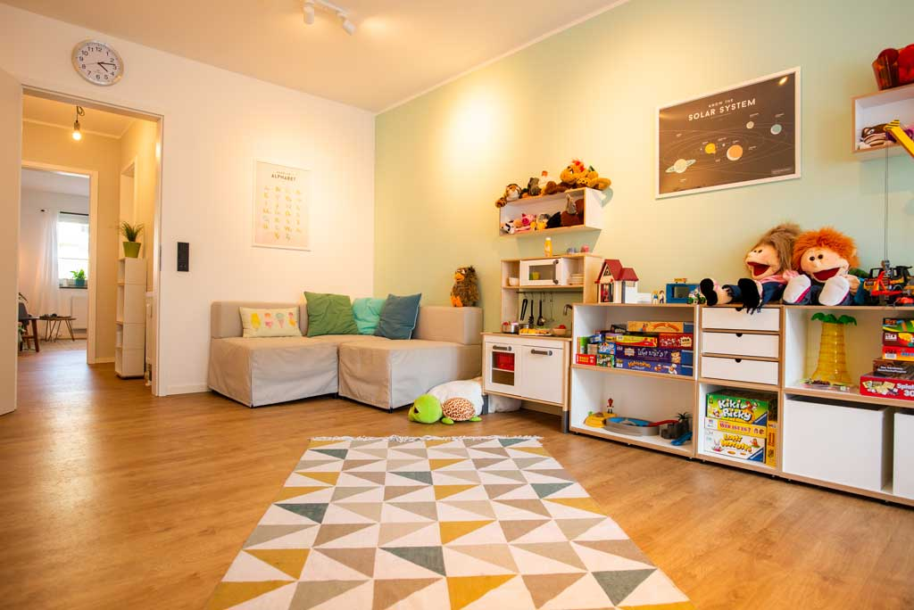

Die Praxis
Eindrücke aus unseren Räumen.


Diplom-Psychologin
Kinder- und Jugendlichenpsychotherapeutin
Diplom-Pädagogin
Kinder- und Jugendlichenpsychotherapeutin
Diplom-Psychologin
Kinder- und Jugendlichenpsychotherapeutin
Nach einer Kontaktaufnahme per Telefon oder per eMail vereinbaren wir einen Termin für das Erstgespräch. Dieses ist vertraulich, unverbindlich und dient einem ersten wichtigen Kennenlernen. Dabei stellen wir die Bedürfnisse und die Therapieziele der Patientinnen und Patienten in den Vordergrund.
Am Ende des Erstgesprächs können wir uns gemeinsam für weitere Probesitzungen entscheiden. Dabei ist wichtig, sich gegenseitig besser kennenzulernen, um zu spüren, ob die „Chemie“ zwischen Therapeutin und Patientin oder Patient passt. In diesen Sitzungen wird auch eine störungsspezifische Diagnostik durchgeführt, möglicherweise eine Diagnose gestellt und verständlich erklärt. Darauf folgt die Erarbeitung der individuellen Therapieziele und des Behandlungsplans. Nur wenn die Patientin oder der Patient sich gut aufgehoben und verstanden fühlt und eine vertrauensvolle therapeutische Beziehung aufgebaut werden kann, macht die weitere therapeutische Zusammenarbeit Sinn. Dann wird der Antrag an die Krankenkasse gestellt, damit die Kosten für die Psychotherapie übernommen werden.
Eine psychotherapeutische Behandlung in unserer Praxis besteht in der Regel aus einem wöchentlichen Termin à 50 Minuten. Weiterhin werden individuell und nach Absprache mit den Patientinnen und Patienten auch Gespräche mit den Bezugspersonen durchgeführt. Die Dauer der Therapie wird abhängig von der Ausprägung der Symptomatik und dem Schweregrad des Krankheitsbildes bestimmt.
Unser psychotherapeutisches Behandlungskonzept basiert auf der Verhaltenstherapie als ein anerkanntes Richtlinienverfahren. Die Verhaltenstherapie ist ein therapeutisches Verfahren, welches darauf abzielt, die Patientinnen und Patienten mit Techniken vertraut zu machen, die ihnen dabei helfen, unerwünschte Verhaltensweisen effektiv abzulegen.
Weiterhin ist dies ein abgesicherter, effektiver Ansatz zur Veränderung nicht hilfreicher Denkmuster, Verhaltensweisen und belastender Gefühle.
Das Prinzip der Hilfe zur Selbsthilfe steht dabei im Vordergrund. Die Patientinnen und Patienten werden als eigene Experten für ihr Denken, Fühlen und Handeln angesehen. In der Verhaltenstherapie wird davon ausgegangen, dass jedes Verhalten veränderbar ist und durch geeignete Verfahren und Interventionen eine systematische Verbesserung der behandelten Beschwerden erzielt werden kann. Zusätzlich werden in der verhaltenstherapeutischen Arbeit methodenübergreifende Interventionen genutzt und individuell auf jeden Einzelnen abgestimmt.
Dabei liegt es in der Verantwortung der Patientinnen und Patienten, eigene Therapieziele zu formulieren und ihren Therapieprozess aktiv mitzugestalten.
Nach störungsspezifischer Diagnostik werden folgende Störungsbilder behandelt:
Depressionen
Angststörungen
Anpassungsstörungen (nach belastenden Ereignissen)
Traumata
Zwänge
Identitätsprobleme und Entwicklung von Persönlichkeitsstörungen
Schlafstörungen
Somatisierungsstörungen
Essstörungen
Störungen des Sozialverhaltens
Aufmerksamkeitsstörungen
Entwicklungsstörungen schulischer Fertigkeiten
Emotionale Störungen des Kindesalters
Selektiver Mutismus
Ausscheidungsstörungen
Bindungsstörungen
Darüber hinaus werden Beratungs- und
Informationsgespräche zu verschiedenen
Krisen- oder Belastungssituationen angeboten.
Der Umgang mit chronischen und lebenslimitierenden
Erkrangungen, sowie Sterbebegleitung und
Umgang mit Tod und Trauer stellen einen weiteren
Schwerpunkt im Behandlungsspektrum dar.
Gesetzliche Krankenkassen
Die gesetzlichen Krankenkassen übernehmen immer die ersten fünf probatorischen (probeweise) Sitzungen, die von den Krankenkassen genehmigungsfrei und ohne Bewilligung genutzt werden können. Ist im Anschluss an die Probatorik eine Kurzzeit- oder eine Langzeittherapie indiziert, wird diese mit Hilfe der Therapeutinnen bei den Krankenkassen beantragt.
Private Krankenkassen (mit und ohne Beihilfe)
In der Regel übernehmen die privaten Krankenkassen auch die ersten fünf probatorischen (probeweise) Sitzungen. Zur eigenen Absicherung erfragen Sie bitte im Vorfeld bei Ihrer privaten Krankenkasse, ob in Ihrem Vertrag die Probatorik sowie die psychotherapeutischen Leistungen enthalten sind.
Selbstzahler
Selbstverständlich können die Behandlungsangebote auch selbst bezahlt werden.
0251 39 488 150
0251 39 488 141
Falls Sie uns nicht persönlich erreichen, hinterlassen Sie gerne eine Nachricht auf unserem Anrufbeantworter. Wir werden schnellstmöglich zurückrufen. Natürlich können Sie uns auch per Mail oder über das Kontaktformular schreiben.